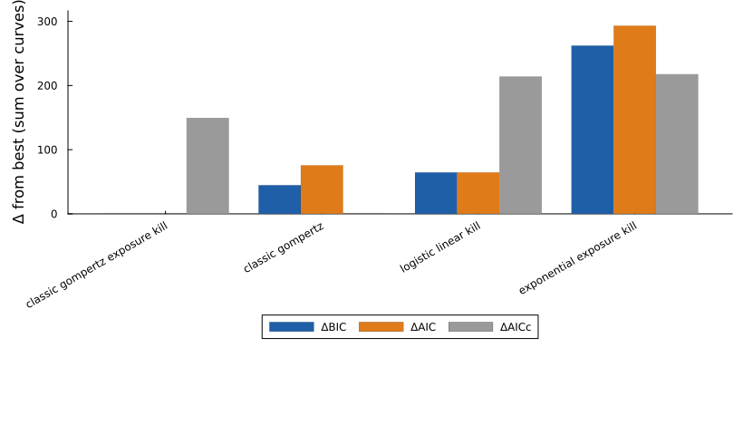
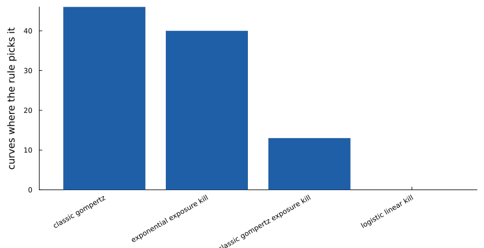
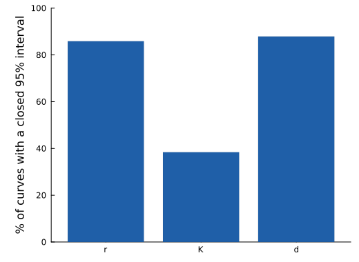
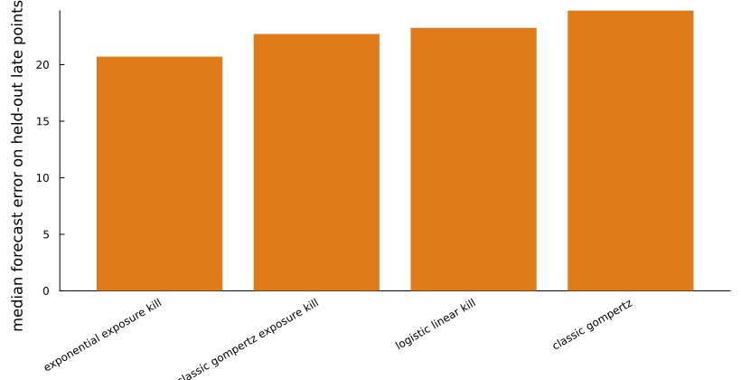

Breast xenografts with neoadjuvant sunitinib or axitinib
Ebos lab, Zenodo 10607753; preprint doi 10.1101/2023.02.22.529613 · doi:10.5281/zenodo.10607753 · source: https://doi.org/10.5281/zenodo.10607753 · licence: CC BY 4.0
Human breast cancer xenografts in mice given sunitinib for the 14 days before surgical removal of the primary tumour, at 60 or 120 mg/kg/day, for 3 to 14 days and in several sequences (for example 120 mg/kg/day for 3 days, then 60 for 11). Tumour volume (mm³) was measured with calipers. The Ebos lab released these data together with post-surgical metastasis follow-up. This page uses the 99 mice in the nine sunitinib groups listed in the record's table_summary.pdf. The vehicle mice are the LM2-4 page, and the axitinib groups are left out because the table gives no schedule for them.
Dose schedules. Each mouse gets a stepped exposure built from its group's schedule ([dataset.schedules] in pipeline.toml): treatment occupies the 14 days before surgery (day 34, or day 38 for the validation groups), and the exposure is the daily dose divided by 60 mg/kg/day. The panel compares Gompertz growth with no drug effect against exponential, logistic and Gompertz growth with a kill term proportional to that exposure.
Reading the result. Pooled over mice, Gompertz growth with a dose-proportional kill term beats the same growth with no drug term by 45 BIC, so the schedules carry real information. Per mouse the evidence is weak: the no-drug Gompertz model is the pick on 46 of 99 mice, because a few days of treatment barely bend most individual curves. Pooling across mice with shared parameters (fit(...; shared_params)) is the package's tool for estimating one drug effect from many weak curves.
Model comparison
Each of the 99 curves was fitted separately with every model. Criteria are summed over curves and shown as differences from the best model. The rule picks the model with the fewest parameters within 2 BIC of the best: classic gompertz exposure kill.
| Model | k | ΔBIC | ΔAIC | ΔAICc | Curves where picked |
|---|---|---|---|---|---|
| classic gompertz exposure kill (pick) | 3 | 0.0 | 0.0 | 149.5 | 13 |
| classic gompertz | 2 | 44.6 | 75.6 | 0.0 | 46 |
| logistic linear kill | 3 | 64.5 | 64.5 | 214.0 | 0 |
| exponential exposure kill | 2 | 262.2 | 293.1 | 217.5 | 40 |



Identifiability of the pick
Profile likelihood on every curve (each parameter fixed on a grid, the others refitted; 95% cutoff χ²₁ = 3.84). A parameter counts as identifiable on a curve when its interval closes inside the bounds.
| Parameter | Median estimate | Curves identifiable (%) |
|---|---|---|
| r | 0.074 | 86 |
| K | 2421.874 | 38 |
| d | 0.071 | 88 |

Forecast check
Each model was refitted on the first 70% of each curve and asked to predict the rest.
| Model | Median relative error (%) | Predictions within 20% (%) |
|---|---|---|
| exponential exposure kill | 20.7 | 44.4 |
| classic gompertz exposure kill | 22.7 | 45.4 |
| logistic linear kill | 23.2 | 43.9 |
| classic gompertz | 24.8 | 43.4 |

Reproduce
python3 -I showcase/data/prepare.py --only ebos_sunitinib
julia --project=showcase -t auto showcase/run_pipeline.jl --only ebos_sunitinibFitted with GrowthParameterEstimation.jl 0.5.5. Results: showcase/results/ebos_sunitinib/.